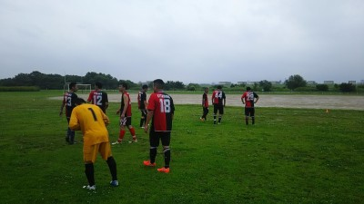
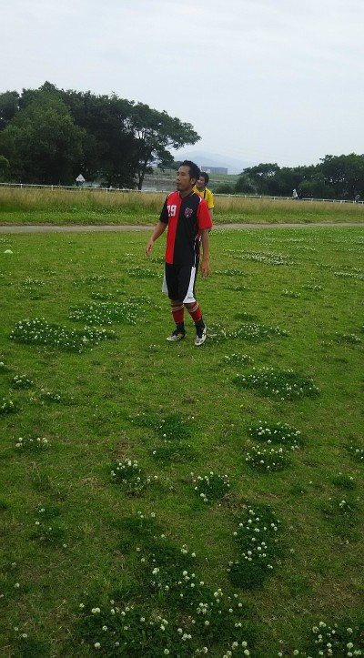
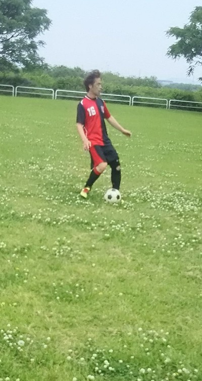
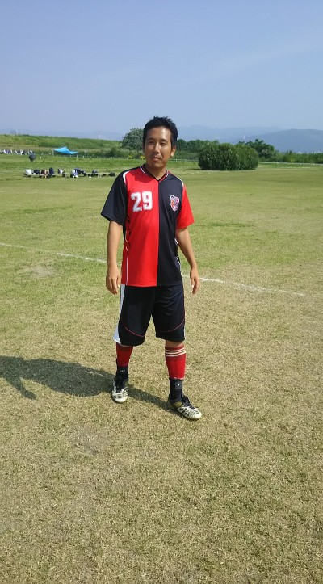

あめ、あめふれふれもっとふれ～♪←４０歳以上にはわかるはず（笑）
うちのチームが出来て対外戦してきた中で初めての雨の中の試合だったような気がします。ほんと季節が夏で良かったなって思いました。前日の予報とか見て、ちょっと強い感じが２度ほど来るかなって思ってましたが、結構激しく降って、最後は水たまりも出来て、ほんと泥んこサッカーになりました。個人的は童心に帰って楽しかった面もありますが、何より良く管理人がストップ掛けなかったなって思いました。終わって帰るころには止んできたし。（涙）
ほんとそんな状況の中、お付き合いして頂いたジェネシスさん、ファントリックさんありがとうございました。
今日は１チーム合計６本のスケジュールでしましたが、雨でいつも書いている単語とかも書けず、１試合ごとに細かい所は覚えてないっす。それでも適当に思い出しながら報告しますね。
１試合目はジェネシスさんとでした。初得点はうちでした。まえちゃんが右サイドでドリブルして、左サイドよりのおかちゃんが２列目から裏へ飛び出して、それに合わせて素晴らしいパスがまえちゃんからでて、おかちゃんが追いついて、ボールが跳ねていてキーパーも出てきたのを冷静にインサイドでループシュートで決めました。さすが得点王狙っている人はちゃいますな～。
まあ、反対に１点取られたのはまあ、しゃーないけど。。おもろかった。相手が正面からミドルシュートをセンターバックしてたヤスさんがヘディングで自陣ゴールにクリア、見事なループオウンヘディングでした（笑）
うちは真ん中が開くのが多いのでやっぱりボランチかセンターバックのどちらかが前に詰めてスぺースを埋めることが大事だなって全体的に見て思いました。
後は試合開始してちょっとしていきなりもりちゃんがボテっと転倒して、んで試合終了の頃にゆっきーがボール持ってシュートの体制、もりちゃんが前に居たので頭抱えてしゃがみこんで、いざゆっきーの強烈なシュート・・・もりちゃんにドカーンでダウン（笑）
２試合目はファントリックさんでした。僕はワントップしてましたが、常に裏へ走り抜ける動きをしてて、それを見てくれていたテラさんからのナイススルーパスが出て、キーパーと１対１になったけどキーパーもせまってきて、ふわっと浮かせようとしたけど防がれてコーナーになりました。そのコーナーをオカちゃんが蹴って、ダイレクトボレー狙ったんだけど、そんな技術あるわけない（涙）、見事に空振りして、そのままボールは流れて、転々とテラさんの元へ、難しい浮き球ボールをダイレクトでループボレー、見事に決まりました。やっぱり技術の差はしゃあないなあ（笑）
相手もいい感じのロングシュートとかもあったけどキーパーのまんちゃんのファインセーブもあったりだけど、ゴール前での混戦のこぼれ球を今度は反対にループで決められました。
あとまんちゃんのゴールキックが今度は前に居たヤスさんの後頭部に直撃して、あわやオウンゴールっていうのがあったけど、今日はヤスさん厄日ですね（笑）
３試合目は再度ジェネシスさんとでしたが、とりあえずゆっきーがドロンジョが居たら「このスカぽんたん」と言われていたくらいなんかしてた（笑）、まあドロンジョ以上にきっついことをとある人に言われてたけど。
後は毎回恒例になってきている感があるけど、ヤスさんが攻めてて、オフサイド？じゃなくてドリブルしてキーパーと１対１、ナイスキーパー（笑）
４試合目はファントリックさんとでした。このあたりが雨が凄くて、下も水たまりが出来てきましたね。なんかしらんけど、相手先のコーナーから誰かにたまたま当たった？それとも押し込んだ？まあ、それで決められちゃいましたね。
コーナーとかセットプレイではそんなに激しくは危ないからいらないけど、やっぱりマーク決めて、その人について行くようにしないと駄目ですね。後は声掛けかな。
５本目はジェネシスさんと。もう雨で記載が出来ない状態だったのでほとんど覚えていない。でも右サイドからドリして狙いすましてシュートをしてもらったって思ったら、わずかにゴールの横へ両ひざついて、手に顔を当てて、悔しがっているテラさんが１０秒くらい動かなかったのが印象的でした。
んで、最後はファントリックさんと。このゲームだけで言えば水たまりデフェンスに完封されましたね。僕も裏に抜けて１対１でよっしゃーて思ったら、ボールが水たまりで完全ストップ、そりゃないわ（涙）。
ゆっきーも果敢に攻めて、ゴール前で相手を交わして、コース狙ってシュート、キーパー全く反応できず。よっしゃー・・・水たまりにボールが入ってそのまま威力がなくなってゴールライン目の前でボールが完全ストップ、ゆっきー、明日があるさ（笑）
最後も果敢にタカさんとかが攻めるんだけど、ボールがとにかく足に着かない状態でしたね。
あ、ちなみにフリーキックほんまごめん。試合終わってヤスさんに意図を説明したら「そんな技術ないやろ」・・ごもっとも（涙）
まあ、そんな感じの一日でした。参加された皆さん本当に雨の中お疲れ様でした。
画像は「戦場に赴く男達」とでもしときましょう（笑）
今日は２週間ぶりの練習でしたね。
どんよりとしていて湿気は多かったけど、日差しはあまり無くて涼しい風も吹いていい感じでした。
本日は遅刻早退、体験参加を含めて１２名の参加がありました。参加された皆さんお疲れ様でした。
今日はやかましいじじいにまた言われるのも嫌なのと、早退が居たのでゴールは立てずにしました。
最初は珍しく２人組でパス練習して、その後は輪になってボール２個で鳥かごして、その後はミニゲをしました。
ミニゲではうーん、今日はこっすいシュートが多かったような、テラさんを筆頭に（笑）。個人的に足の怪我があったので、気にしながらしていたのであんまり練習内容覚えてないや。
最後になかやんがくたばったのは覚えてる（笑）
まあ、そんな感じで少し早めに終わりました。
来週は試合ですので、時間厳守でお願いしますね。
昨日参加された皆さんお疲れ様でした。
去年、無得点の自分が2戦連発とは、驚きです。
こぼれダマ狙いでポジション取りしていたら、こぼれて来て
くれました、ラッキーでした。
子供の頃、翼くんの様に置いてある球をドライブさせるのは無理なので、
ちょっと浮かしたボールを微妙にスライス回転させてドライブシュートや！
と言って、遊んでいた事が、役にたちましたね。
という事であれは、バッタもんのドライブシュートです！
失敗すると、大ホームランになっちゃいますが・・・。
得点出来たのは良かったですが、後輩であるタクちゃんとのコンビプレーで
相手を崩せそうな機会が2回ほど有ったのですが、両方とも自分のトラップミスで、
ダメにしてしまいました・・反省。
やっぱりサッカーはトラップ命ですね、改めて痛感です。
という事で、皆さんも、ドライブもどき、やってみて下さいね。
うまく行けば、かなりキーパーの嫌がる軌道で飛んでくれますよ！
何回も言いますが、私はあんなに黒くありません、落書きもありません！
昨日の試合お疲れ様でした。
スパークさん先週に引き続きありかとうございました。最高のサッカー日和でしたね。
内容も攻めはボールがいい距離感で回せていてどのゴールも芸術的でしたよね。代表次こそは決めてくれると信じていましたよ(笑)
守りも粘り強く対応してくれたおかげでゴール前は守り易かったです。スパークさんの7番(僕のなかではスアレスと呼んでいる)も前の試合よりも自由にはうごけなかったのではないでしょうか。
今日怪我をしたまたは元々怪我持ちのみなさん、アフターケアしっかりして少しでも長く楽しくサッカーできるようにしましょう。


今は雨が降ってますが、試合前は段々と曇りになってきて過ごしやすい感じでしたね。
今日も先週に引き続きSPARKさんとの練習試合でした。対戦して頂いたSPARKさん本当にありがとうございます。また７月もよろしくお願いします。
さて、またまた試合ごとにハイライトを中心に報告したいと思います。
いつものごとく人数が多いので、昨日２チームに分けてたら朝に減ってる。緊急は仕方ないけど試合の時はわかっている時は前日の夕方までに変更をお願いしますね。
結果的には１６名の参加がありました。参加された皆さん、お疲れ様でした。
２チームに分けて、もう一方から助っ人を出す形でしました。詳細は試合結果に書いてます、まんちゃんはいつもどおり共通のキーパーをしてもらいました。
２０分４本でしたが、個人的にはライン引きで疲れた・・・、でも自称やけどラインの準備させたら凄いほうだと思ってます（笑）、皆さんにも協力してもらったので早く出来ましたね。
１試合目は攻守ともにいいバランスでしたね。審判してて、先週にはなかった横へのパスとかが少し多かった感じでサイドも上手く使っていた感じでした。
１点目はそのサイドから生まれました。ゆっきーが右サイドにボール受けて、そのままコーナーラインのほうまで上がって、素晴らしいセンタリング、ちょっと大きいかなって思ってたらVTECエンジンツインターボを搭載したオカちゃんがファーサイドに詰めてヘディングシュート、お見事でした。
ただ、相手チームのコーナーとかも結構あったり、フリーキックもありましたがハイボールに対してやっぱりある程度競らないと駄目やなって感じました。まあ、怪我しそうまでとは言いませんが・・。
２試合目は、個人的にはあんまり書きたくないかなあ。ワントップさせて貰いましたが、やっぱり１試合目で攻めは厳しい。体がついてこない（涙）。
相手のラインが高くてオフサイドになったりしたので、ライン前から裏へ抜ける動きをしてましたが、最初はいい感じで自分でヘディングで相手を超えて、そのままドリしてキーパーと１対１になったけど、途中で足がもつれてボールが跳ねて太ももに当たってナイスバックパス（涙）
２回目は誰かからのパスか忘れたけど、同じように抜けてキーパーと１対１、今回は追いついたけどボールが跳ねていたのでおさえようと足を垂直にして蹴ったらまあまあの威力はあったけど、動かずにいたキーパーの股の間にすっぽり（恥）
それ以外もコーナー失敗したりで、もう駄目だって思ってたら３度目も同じシーンがあって左サイドを駆け上がって行ったら、相手ディフェンスが追いついてきて、その前にシュートと思ったけど、これ外したら追放されるって味方からの見えないプレッシャーにおびえながら、ワンフェイントで交わして、キーパーと１対1、キーパーをしっかり見て、一旦止まってインサイドでゴールのサイドネットに決まることが出来ました。ほんと安心した瞬間でした（笑）
後はまえちゃんからのいいクロスにおかちゃんがダイレクトボレーっぽいのとかあったりで全体的に攻めてましたね。やっぱり裏を取る動きをするとデフェンスラインが下がるのでそれは良かったかなって思いました。
３試合目も全体的に攻めていた感じがします。得点はうちのコーナーからのこぼれ球を走りこんできたタカさんがお見事なループっぽい威力のあるシュートでゴールとなりました。
タカさんは二戦連発ですね。今年は今から得点王狙いっすかね。打倒オカちゃん目指して頑張ってください。結果的には僕の１点が一番しょぼかった（涙）
４本目はよっしー劇場がまた始まってましたね。３本目でもいい感じで最後はクールポコってくれてましたが、この試合でもいろいろとしてくれました。
オフサイド・・・「ないない」よっしーボールキープ、左４５度、キーパーと１対１、余裕こいてシュート、キーパーがいきなり横っ飛びセーブ（笑）
クロスボールを中央でよっしーがジャンピングトラップ、そのまま左側に流れてシュート、見事にラグビーポールに当たって、跳ね返って後ろからゴールとなりました（笑）
テラさんも何度も果敢に前へと行ったりシュート打ってましたが、今日は空振りでしたね。
キーパーしてたまんちゃんもエリア外でヘディングでクリアするなど無失点に向けて頑張ってくれてましたが、最後に悲劇が・・・。おかちゃんが切り込んでシュート、クリアされて、こぼれ球をわだっちがシュート、それもふさがれて、再度おかちゃんの元に、今後こそ・・・シュート空振り（笑）、そのあと取られてカウンターくらって、試合終了ギリギリに相手チームのお見事なループシュートで１点取られちゃいました。その前にもおかちゃんが自陣ペナエリア内でハンドをごまかした疑惑があったりと・・・、ゆっきーは共犯？（笑）
「安心してください・・・われてますから」BYオカちゃん、なのでまあ良しとしましょう（笑）
まあ、そんな感じで終わりました。
個人的に怪我で途中で引いてしまって当初の予定と違って代わりに出てくれたメンバーさんありがとうございました。ご迷惑をお掛けしましたが、来週出来るかが微妙かなって感じですが頑張って治したいと思います。
本日参加されたみなさん、お疲れ様でした。
画像は今日大活躍（一人はいい意味でも悪い意味でも）の２名ですが、うーんタカさんはどっちやっけ？（笑）
昨日、参加された皆さん、お疲れ様でした。
ん～、画像の方、ちょっと黒すぎですねぇ！
たぶん、自分じゃありません！！
エガリテに参加させて頂いて、1年5ヶ月。やっと得点出来ました。
おそらく、フルコートのサッカーでは、25年ぶりの得点かと思われます。
お恥ずかしい限りですが・・・。
まっさんも書かれてましたが、敵さんに、すばらしいシュートを決められていたので、
実は、チャンスがあれば、やり返してやろう！と思っていました。
スパークさんのディフェンスが中よりに行っていたので、うまく行けばチャンスかも、
と思い、ポジションを上げて行ったところに、シゲさんが気付いてくれて、絶妙パスを
頂きました。
ボールを持った瞬間から、タカさん、ふぁー！という叫び声が何度も聞こえていたのですが、
やり返したい気持ちの方が、少し勝っておりました。
枠内に飛んでくれて、ホッとしたのと、25年ぶりの感触に思わず喜んでしまいました。
呼んでくれていた方、ゴメンなさいです。（スガちゃんかな？）
次戦もスパークさん、お互い手の内がわかって来ている事もあると思いますが、
線審しながら試合を見ていると、やはり、やられている時は、つなぎの意識が薄れている
のかな、と思います。
攻撃時は、つなぎ8割、いひょうを突くロング2割。ここぞの守りは、２人以上の連携で
（真横に並ばず！）相手を自由にさせない。くらいの意識付けで挑んでみてはどうでしょうか。
自分も、ついついロングを蹴りたくなりますし、守備もサボりますが、気を付けて行こうと
思います。
自分的には、アシスト数が思うように、増やせていないので、そちらの方も頑張ります！
まっとんさん、来年とは言わずに、今年もっと点とって下さいね！
では、次回も頑張って行きましょう！
昨日の試合参加者のみなさんおつかれさまでした。今日こそはクリーンシート（無失点）で終える意気込みで試合に臨みましたがなんてことはなく自らのオウンゴールでまくがあがりました（爆）。
序盤は動きもよくいい形で得点が決まりイケイケでしたね。
でも相手のMSNトリオが徐々に実力を発揮してきて終わってみればプロ野球なみの点数でした。
うまかったですね。ボールタッチからシュートモーションへの速さ、シュートのスピード・コースともに対応しきれませんでした。勉強させていただきました。
今日の目標は①ゴールキックの安定②ポジショニング③サッカーを楽しむでしたが①と②は継続課題です。
試合前のアップで付き合ってくれた菅ちゃんごめんなさい。来週は楽しみつつも結果がだせるよう頑張ります。
代表、ユニフォームありがとうございました。これからも許される限りキーパー出場したいので試合で着る機会は少ないと思いますが大事にします。
暑い中でしたが、皆さまお疲れさまでした！
今日は今年初得点を取れて、めっちゃ嬉しかったです(^o^)
パスをくれたのはオカちゃんやったと思います。いいパスをもらって、フリーだったので思いきって蹴りました。
ヤスさんからパスを受けた時は、何もないところで足を捻ってしまい、コケてしまいました(^_^;)
また相手さんのコーナーキックをヘディングでクリアしようとして、目をつぶってしまい、頭は痛いは、クリアミスで点を取られてしまい、スミマセンでした。
また来年も点を取れるよう頑張りたいです！

さわやかな風が吹くこの場所で～って歌の歌いだしですが、今日はそんな感じでした。
今日は久々の大塚地区グランド、完全にではないですが芝生っぽくなっていて凸凹も無くいい感じでしたね。今日は遅刻早退含めて１８名の参加がありました。
いつもながら対戦相手になって頂いたスパークさんありがとうございます、来週も引き続きよろしくお願い致します。
今日は２０分と最後だけ２５分の４本でしたが、審判したり相手チームさんの助っ人に行ったりでバタバタしましたが皆さんが協力して頂いたので支障なく活動できました。ありがとうございます。
基本的に２チームに分けてしました。チーム分けは試合結果を参照してください。結果的には助っ人の若手？にボコられた感じでしたが、たまにはそんな時もあってもいいでしょう（笑）
１試合目は全体的に攻めていた感じでしたね。審判してましたがいい感じでスペース使っていたと思います。
１点目はまあ、あれはしゃーない。明らかにアーリークロスっぽい感じなのがそのままゴールに入った感じでしたね。それでもぎりぎり追いついきかけていたキーパーのまんちゃんの横っ飛びがいい感じでした。
うちも攻めていましたし、まっとんのポストに当たる惜しいシュートもあったりでしたが、試合終了前にスガちゃんからの縦パスをまっとんがキープしてシュートポストに当たりながらも一本目と違いゴールに吸い込まれていきました。
ゆっきーの惜しいループシュートもありましたね。
２試合目は・・・すんません。相手のコーナーを１６文キックで蹴りだそうとしたら足先に当たって、そのまま手にバチコーン、PK与えちゃって決められました。もう１点もクロスから反対に詰めていた相手チームさんにやられましたね。全体的に攻め込まれている感がありました。
個人的にはよっしゃんのライナー性のセンタリングをゴールニアに走りこんで、相手の前でヘディングして向きも変えたんですが残念ながらゴールの上でした。あんなプレイが出来るんやって自分でもびっくりでした。（笑）
３本目はうちのゴールラッシュになりました。相手の助っ人さんに強烈なシュートを決められましたが、うちは１点目がまっとんが縦パスを出して、オフサイドギリで２列目から飛び出したテラさんがドリブルして、キーパーの状態も見たうえで冷静に決めました。テラさん、１試合目はかなり空回りやったのに（笑）
まっとんは今日は大活躍ですね。先週のBBQのおかげかな？久々に決めた得点とともによかったらカキコお願いしますね。でも意味不明なところで尻餅ついてたのはWHY?
２点目は、中央でシゲさんがキープして右サイドを駆け上がるタカさんへパス、それをスピードに乗ったままキープして切れ込んで角度の無い所から強烈なシュートが突き刺さりました。タカさんは初得点ですね。今まではキープしてからさらにラストパスが多かったですが、今日は相手の強烈なシュートのお返しとばかりに見事なゴールでした。初得点の感想を2000文字以上でよろしくお願いします（笑）
３点目はスガちゃんがループで前に居たゆっきーがキープして、ゆっきーが出した？こぼれ球？そのボールに走りこんできたハマさんがいいコースのミドルシュートが決まりました。助っ人でデフェンスしていたわだっちの目の前で（笑）、ハマさん、ぜひわ〇っちにシュートはこう決めるんやっという講義をよろしくです。（笑）
４試合目は相手の１点目はちょっともったいない失点でしたね。コーナーキックをキーパー含めて全員がお見合い、そこに詰めてきた相手に決められちゃいました。やっぱり声掛けは必要ですね。後の２点も助っ人さんにボコられましたね。
まあ、そんな感じの試合でした。今日思ったのは、ボランチとかからパスが出したいけど、相手の後ろに居て出せないって感じが多かったような気がします。下がってもらいに来るとか、ちょっとずれてパスコースを自分で作るみたいなことが出来ればもっといい感じになるかなって思います。
後は同じサイドばっかりだったのでサイドチェンジも出来ればいいかなって思いました。
まあ、僕も出来ているわけじゃないので、楽しみながら各自が出来るようになって行けたらいいですね。
画像は本日強烈なシュートで初得点を決めた方の画像です。ん？？？なんか違うかなあ（笑）
しばらく練習に参加できていませんでしたが、15日は芝生の良いところで久しぶりにサッカーができて楽しかったです。
BBQには嫁も参加させて頂き、楽しい時間を過ごさせて頂きました。
まっさんの車からたくさんの道具が出てきたのにはビックリしましたが、色々準備して頂き、ありがとうございました！
最初炭になかなか火がつかず焦り、下に置いてた着火剤がいつの間にか燃えてたというハプニングもありましたが、いい感じに炭に火がついてからは、ワッチさんら職人さんが腕を振るい、肉が美味しかったです。
最後は片付けの途中で帰ることになり、すみませんでした。
第2回BBQも楽しみにしています。